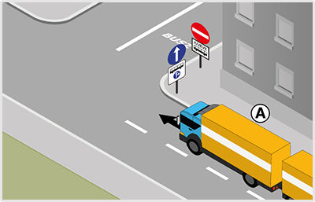
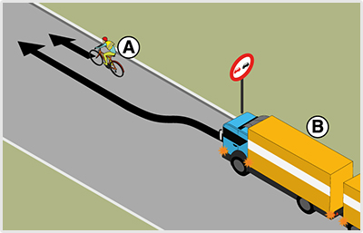
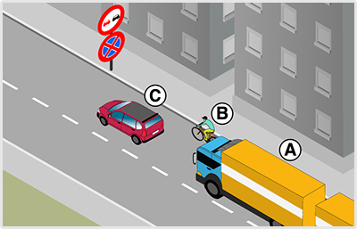
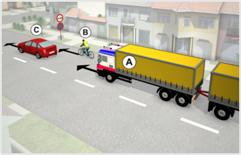

- 128. Megszünteti-e ez a jelzőtábla a ’Megfordulni tilos’ jelzőtábla hatályát? #703442
- Igen.
- Nem.

- 129. Mikor nem kötelező legalább a táblával megjelölt sebességgel közlekedni? #703465
- Akkor, ha az a személy- és vagyonbiztonságot veszélyeztetné.
- Akkor, ha a vezető alacsonyabb sebességgel kíván közlekedni.
- Mindig kötelező legalább a táblán megjelölt sebességgel közlekedni.

- 130. Mi a jelzőtábla neve? #703467
- ’Kikerülési irány’
- ’Kötelező haladási irány’
- ’Szoros jobbra tartási kötelezettség’

- 131. Szabad-e behajtani gépkocsival a jelzőtáblával jelzett területre? #703469
- Igen, mozgáskorlátozott személy szállításakor.
- Nem.
- Igen, feltétel nélkül.

- 132. Gépkocsival közlekedve szabad-e megfordulni a jelzőtábla utáni útkereszteződésben? #703470
- Nem.
- Igen.
- Csak akkor, ha a jelzőőr erre engedélyt ad.

- 133. Mit jelez ez a jelzőtábla? #703472
- Az úton tilos a járműveknek a jelzőtáblán megjelöltnél kisebb távolságban követniük egymást.
- Az úton tilos a gépjárműveknek a jelzőtáblán megjelöltnél kisebb távolságban követniük egymást.
- Az úton tilos a személygépkocsiknak a jelzőtáblán megjelöltnél kisebb távolságban követniük egymást.

- 134. Milyen járműszerelvénnyel szabad behajtani ennél a jelzőtáblánál? #703473
- A vonójárműből és egytengelyes vagy félpótkocsiból álló járműszerelvénnyel.
- Semmilyen járműszerelvénnyel.
- A személygépkocsiból és kéttengelyes pótkocsiból álló járműszerelvénnyel.
- 135. Az alábbiak közül mely jelzőtáblák tilalmát szünteti meg ez a jelzőtábla? #703474
- Az ’Előzni tilos’, a ’Megfordulni tilos’ és a ’Sebességkorlátozás’ jelzőtáblákét.
- Az ’Előzni tilos’, a ’Megfordulni tilos’ és a ’Kötelező haladási irány’ jelzőtáblákét.
- Az ’Előzni tilos’, a ’Megfordulni tilos’ és a ’Kötelező legkisebb sebesség’ jelzőtáblákét.

- 136. Mit jelez ez a táblakombináció? #703475
- Azt, hogy az útra a kiegészítő táblán jelzett időszakban mindkét irányból tilos behajtani.
- Azt, hogy az útra a kiegészítő táblán jelzett időszakon kívül mindkét irányból tilos behajtani.
- Azt, hogy az útra a kiegészítő táblán jelzett időszakban ebből az irányból tilos behajtani, de parkolni szabad.

- 137. Mi a jelzőtábla neve? #703476
- ’Gépjárművel, mezőgazdasági vontatóval és lassú járművel behajtani tilos’
- ’Személygépkocsival behajtani tilos’
- ’Személygépkocsival és mopedautóval behajtani tilos’

- 138. Mit jelez ez a jelzőtábla? #703477
- Azt, hogy a ’Korlátozott sebességű övezet vége’ tábláig tilos a megjelöltnél nagyobb sebességgel haladni.
- Azt, hogy a következő útkereszteződésig tilos a megjelöltnél nagyobb sebességgel haladni.
- Azt, hogy a ’Lakott terület vége’ tábláig tilos a megjelöltnél nagyobb sebességgel haladni.

- 139. Mit jelent ez a közúti jelzés? #703488
- Az útkereszteződésben a veszélyes anyagot szállító járműnek jobbra kell továbbhaladnia.
- Az útkereszteződésben minden tehergépkocsinak jobbra kell továbbhaladnia.
- Az útkereszteződésben a veszélyes anyagot szállító gépkocsik haladhatnak jobbra.

- 140. Mit jelent ez a közúti jelzés? #703489
- Az útkereszteződésben a veszélyes anyagot szállító járműnek balra kell továbbhaladnia.
- Az útkereszteződésben minden tehergépkocsinak balra kell továbbhaladnia.
- Az útkereszteződésben a veszélyes anyagot szállító gépkocsik haladhatnak balra.

- 141. Vonatkozik-e a tehergépkocsira a ’Kötelező haladási irány’ jelzőtábla alatt elhelyezett kiegészítő tábla? #703491
- Nem.
- Igen.
- Igen, ha a rakfelületen legalább 10 utast szállít.

- 142. Mi a jelzőtábla jelentése? #703606
- ’Kötelező haladási irány’
- ’Egyirányú forgalmú út’
- ’Terelőút’

- 143. Mi a jelzőtábla jelentése? #703607
- ’Kötelező haladási irány’
- ’Kikerülési irány’
- ’Egyirányú forgalmú út’

- 144. Ön az ’A’ jelű járműszerelvényt vezeti a képen látható helyen. Milyen irányban folytathatja az útját? #704160
- Csak egyenesen.
- Akár egyenesen, akár jobbra.

- 145. Szabad-e ennél a jelzésnél megállás nélkül továbbhaladni? #714910
- Nem.
- Igen, kivéve határátkelőhelyen.
- Igen, ha a vám- és pénzügyőr jelzéséből más nem következik.

- 146. Szabad-e megfordulni a jelzőtáblát követő útkereszteződésben? #714911
- Igen.
- Nem.
- 147. Megszünteti-e az ábrán látható jelzőtábla a ’Megfordulni tilos’ jelzőtábla tilalmát? #714914
- Igen.
- Nem.

- 148. A képen látható helyen megelőzheti-e a ’B’ jelű járműszerelvény az ’A’ jelű kerékpárost? #715029
- Igen.
- Nem, mert a jelzőtáblával jelzett előzési tilalmat be kell tartania.

- 149. A képen látható helyen az ’A’ jelű járműszerelvény a ’B’ jelű kerékpárost szeretné megelőzni. Mikor szabályos ez? #721304
- Akkor is, ha az ’Előzni tilos’ jelzőtábla után fejezi be az előzést.
- Csak akkor, ha az ’Előzni tilos’ jelzőtábláig befejezi az előzést.
- Soha nem szabályos, mert ezen az úton a jelzőtábla előtt sem előzhet kerékpárost.
- 150. Az ’A’ jelű járműszerelvény az előtte haladó járművek előzését már csak az ’Előzni tilos’ jelzőtábla után tudná befejezni. Válassza ki a helyes állítást! #721305
- Az ’Előzni tilos’ jelzőtábla után már csak a ’B’ jelű kerékpárost szabad megelőzni.
- Az ’Előzni tilos’ jelzőtábla után csak a ’C’ jelű személygépkocsit szabad megelőzni.
- Az ’Előzni tilos’ jelzőtábla után mindkét járművet szabad megelőzni.
- 151. Ön az ’A’ jelű járműszerelvényt vezeti. Megelőzheti a képen látható helyen a ’B’ jelű kerékpárost, ha az előzést már csak az ’Előzni tilos’ jelzőtábla után tudná befejezni? #721306
- Igen.
- Nem.
- Csak akkor, ha eközben nem hajt át a menetirány szerinti bal oldalra.

- 152. A képen látható helyen az ’A’ jelű járműszerelvény a ’B’ jelű kerékpárost szeretné megelőzni. Mikor szabályos ez? #722246
- Akkor is, ha az ’Előzni tilos’ jelzőtábla után fejezi be az előzést.
- Csak akkor, ha az ’Előzni tilos’ jelzőtábláig befejezi az előzést.
- Soha nem szabályos, mert ezen az úton a jelzőtábla előtt sem előzhet kerékpárost.
- 153. Az ’A’ jelű járműszerelvény az előtte haladó járművek előzését már csak az ’Előzni tilos’ jelzőtábla után tudná befejezni. Válassza ki a helyes állítást! #722247
- Az ’Előzni tilos’ jelzőtábla után már csak a ’B’ jelű kerékpárost szabad megelőzni.
- Az ’Előzni tilos’ jelzőtábla után csak a ’C’ jelű személygépkocsit szabad megelőzni.
- Az ’Előzni tilos’ jelzőtábla után mindkét járművet szabad megelőzni.
- 154. Ön az ’A’ jelű járműszerelvényt vezeti. Megelőzheti a képen látható helyen a ’B’ jelű kerékpárost, ha az előzést már csak az ’Előzni tilos’ jelzőtábla után tudná befejezni? #722248
- Igen.
- Nem.
- Csak akkor, ha eközben nem hajt át a menetirány szerinti bal oldalra.

- 155. Ön a kormánykerékkel jelzett járművet vezetve a képen látható helyen a ’B’ jelű kerékpárost szeretné megelőzni. Mikor szabályos ez? #722260
- Akkor is, ha az ’Előzni tilos’ jelzőtábla után fejezi be az előzést.
- Csak akkor, ha az ’Előzni tilos’ jelzőtábláig befejezi az előzést.
- Soha nem szabályos, mert ezen az úton a jelzőtábla előtt sem előzhet kerékpárost.

- 156. Ön a kormánykerékkel jelzett gépjárművet vezeti. Szabad-e megelőznie az ábrázolt helyen az ’A’ jelű, állati erővel vontatott járművet? #723282
- Igen.
- Nem, mert a jelzőtábla tiltja ezt az előzést.